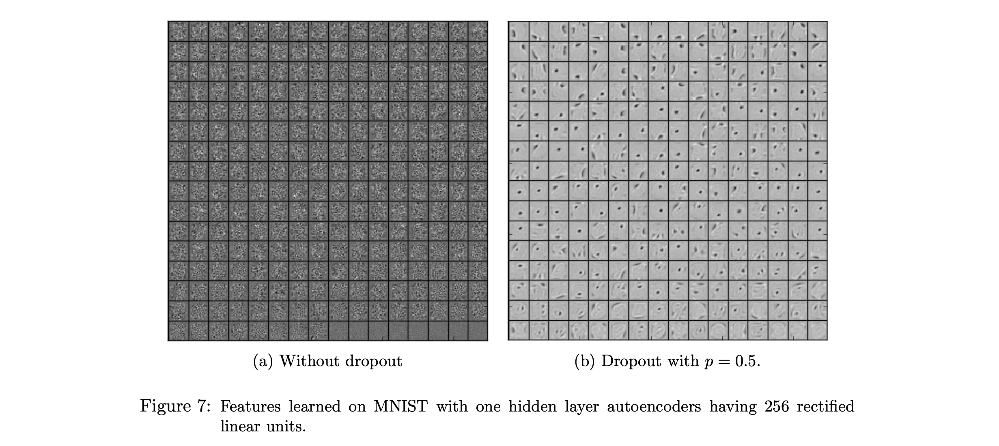
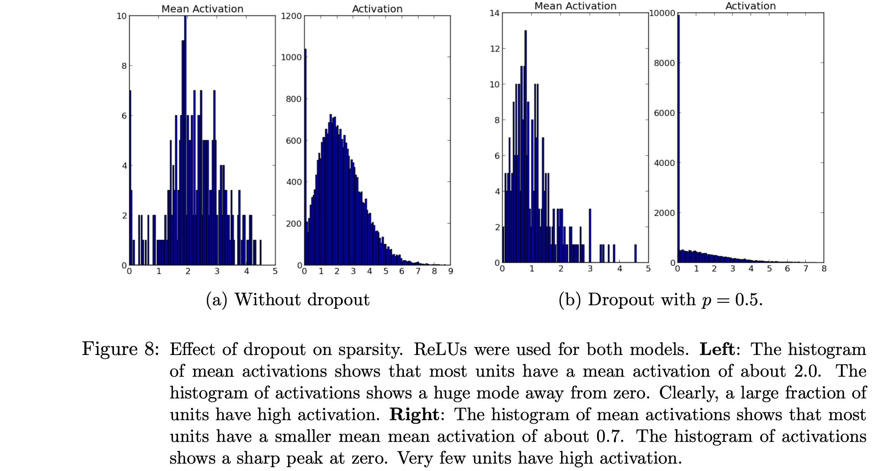
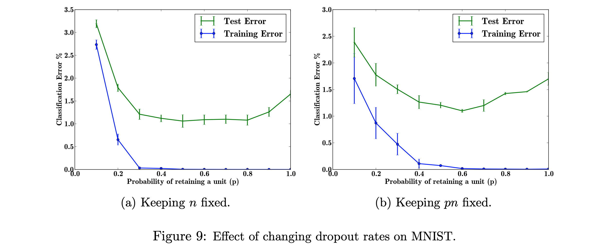

We’ll analyze these three effects:
- quality of features
- sparsity of hidden units
- effect of hyperparameters
Quality of features

This is really quite amazing. Fig7 shows hidden units of a autoencoder trained to reconstruct MNIST images. The without dropout network clearly has learned co-adaptions while dropout has forced hidden units of the dropout network to be more robust to other inputs, and it appears clear the units for the dropout networks are much more productive.
Sparsity of hidden units

The dropout technique has generated sparsity in the activations without explicitly regularizing for it. From the paper, ‘In a good sparse model, there should only be a few highly activated units for any data case. Moreover, the average activation of any unit across data cases should be low.’ The mean activation in the dropout network is .7 compared to the mean activation of 2 in the network not using dropout.
Effects of hyperparameters
Dropout has a tunable parameter p, which is the probability of each dropout unit being utilized in a given minibatch.
Figure 9 looks at the response of the MNIST autoencoder network to two cases. n is the number of hidden units in a particular layer, p is the dropout probability. The experiment shows the lowest test error when the product of probability and number of layers is fixed when p = 0.6. Though they mention that generically the p = 0.5 is the value they typically use.

Additionally, the effect of dataset size yields a point where dropout starts to add beneficial results once a dataset reaches a certain size (presumably where overfitting starts to become problematic).
finally they look at the expensive but more accurate way of scaling down the weights by using Monte Carlo analysis. Turns out that their proposed solution is within one standard deviation from the true Monte Carlo estimation, however, the Monte Carlo must run more than 50 times to begin to match the approximate weight scaling proposed by the paper.